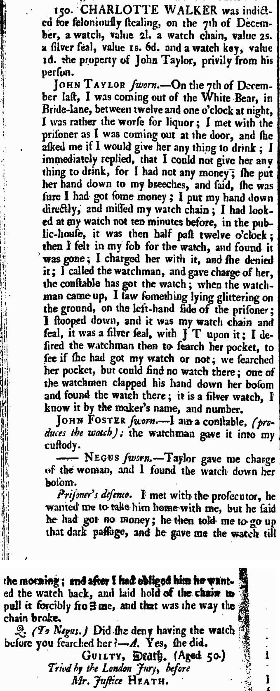

First written down on 7 December 1799, at Bride Lane, off Fleet Street, London
Charlotte Walker
about 1750 to after 14 December 1801
At fifty she was the only woman among eighteen people sentenced to death at the Old Bailey in January 1800, for a man’s silver watch that she said he had given her until the morning. She was sent to New South Wales for life. For more than twenty years before that, a woman of her name had been tried at the same court eleven times and acquitted every time; whether that woman was she, no record says.
On Saturday 7 December 1799, between twelve and one o’clock at night, a man named John Taylor came out of the White Bear in Bride Lane, off Fleet Street. He said afterwards that he was “rather the worse for liquor.” Charlotte Walker met him at the door and asked him for something to drink. He told her he had no money. He said she put her hand down to his breeches, and that he then missed his watch chain, and then his watch. He called the watchman. A chain and a silver seal marked J T were found on the ground beside her, and Negus, to whom she was given in charge, said he found the silver watch “down her bosom.”1
She was tried at the Old Bailey in the session that opened on Wednesday 15 January 1800, before Mr Justice Heath and a London jury. This was her defence, seventy-two words long:1
“I met with the prosecutor, he wanted me to take him home with me, but he said he had got no money; he then told me to go up that dark passage, and he gave me the watch till the morning; and after I had obliged him he wanted the watch back, and laid hold of the chain to pull it forcibly from me, and that was the way the chain broke.”
The court asked Negus one question: whether she had denied having the watch before he searched her. He said she had. The jury found her guilty and she was sentenced to death. The report gives her age as fifty.1

When the session ended, eighteen people received sentence of death. She is the only woman among the names.2 She was not hanged. The index of capital convictions at the Old Bailey records her sentence changed to transportation for life on 20 April 1800, ninety-five days after the session opened, citing the Home Office entry book HO 13/12, pages 450 and 451.3 I have read the index, not the entry book.
A transportation register of June 1801 lists her among the convicts bound for New South Wales on three ships, the Nile, the Canada and the Minorca.4 In a letter of January 1802, as the National Archives describes it, Sir Jerome Fitzpatrick gave the ages of the 98 women convicts who had sailed on the Nile from Portsmouth on 21 June 1801, alongside the Canada and the Minorca, “to shew the probability of the increase of population.”5 I think she was one of those women, but I have not seen the list. The indent of convicts arriving in the colony records Charlotte Walker, tried in London, sentence 21, age 50, on 14 December 1801, 176 days after the ships sailed. It names her ship as the Canada.6
That is the last record I can find of her. The index to the Colonial Secretary’s papers of New South Wales, 1788 to 1825, has no Charlotte Walker.7 If she married in the colony she would be under another name. When she died, and where, I do not know.
Before 1800
The Digital Panopticon joins her to eleven earlier trials at the Old Bailey, from 1777 to 1798, under the same name.8 A Charlotte Walker was tried there in December 1777, January 1780, April 1781, October 1784, February and September 1787, April and September 1788, September 1790, December 1792 and February 1798. Every one of those eleven trials ended in an acquittal.9 Whether they were all one woman, and whether that woman was the one condemned in 1800, nothing in the trials says. Charlotte Walker was not a rare name. What follows is what the records say about a woman of that name, and why I think some of it is hers.
Three of the trials happened at the French Horn in Holborn. In November 1779 Matthew Deverell, who had sold some cattle that afternoon, said she took his pocket-book with a twenty-pound note while they drank together there.10 In April 1781 Joseph Bowman said she pushed him against the wall of the French Horn’s yard and took eight and a half guineas; the barmaid, Sarah Keates, said she knew “her person and name.”11 In October 1784 Nelson Stratton, a hackney man, said she put her hand in his breeches pocket in the same house; the watchmen and the beadle said one guinea was taken from her hand and three dropped from her in the passage of the St Giles watch-house.12 All three men were walking up Holborn late at night when they met her. These three, I think, were one woman.
Her defences in those years have the same voice as her defence in 1800. In January 1780 she said Deverell had offered her half a crown, and “I said I never accepted of any thing so mean as half a crown.” She said she had gone to the French Horn afterwards to leave word where she lodged, and the landlord, Thomas Parry, agreed that she had come in a few nights later, “in such a bullocking manner that I begged she would walk out of the house.”10 In April 1781 she answered Bowman’s two accounts of the robbery: “I said I must have three hands to rob him when I had hold of both his arms.”11 In 1784 she had counsel, Mr Peatt. Charlotte Walker herself said: “I have nothing to say.” A housekeeper, Sarah Holdrich, who had known her three or four years and lived next door but one, said she had paid her six guineas and half a crown on the Thursday, the day before, and produced the receipt; and that men acting for the prosecutor had offered to drop the case if she would make up four guineas more. She was acquitted, and the court ordered: “The woman must have the money back again.”12
On 16 May 1781, three weeks after Bowman’s trial, a Charlotte Walker, spinster, was assaulted. The Middlesex sessions tried Sarah Cates, spinster, of St Andrew Holborn, and William Perry, labourer, for it in October, and the jury found them not guilty; another paper of the same sessions calls the woman indicted Sarah Keates.13 The French Horn’s barmaid in April was Sarah Keates and its keeper William Parry. Whether these are the same people, and the same Charlotte Walker, the papers do not say.
From 1791 the Home Office kept criminal registers for Middlesex, with a description of each prisoner. Six entries from 1791 to March 1794 describe a Charlotte Walker charged with stealing money from a man: a single woman born in Liverpool (once, “Lancashire”), thirty-six to thirty-nine years old, five feet two or three inches tall, with sandy, fair or flaxen hair and grey, hazel or light eyes.14 Two of the six ended in a verdict of not guilty, three in discharge by proclamation, and one in a plain discharge. One of them is the December 1792 trial, in which Peter Hilliard, a servant at the Globe in Fleet Street, said she robbed him in Ship Yard, off Shire Lane, and she said that at Bow Street he had claimed to have given her a shilling “out of charity.”15 I think these six are one woman. Her age in them would put her birth about 1753 to 1758. The woman condemned in 1800 was said to be fifty, which puts it about 1750. That is near, but not near enough to be sure.
The last register entry, in January 1798, is for the trial of February 1798, about three shillings taken in Drury Lane. It gives her age as thirty-nine, a dark complexion, brown hair, dark eyes, and a height of five feet four. Beside it the clerk wrote: “a very old offender has tried.”16 The description is not the Liverpool woman’s. Either a different Charlotte Walker was in custody that winter, or the clerk described her differently.
In September 1790 a porter of the East India Company said she took him to a room in Parker’s Lane that she called her apartment, where he fell asleep in a chair and woke to find his watch, hat, shoe buckles and money gone. She said she came home at daylight and found him asleep on her bed, that “there are several girls in the house; any of them could get into my apartment.” She was acquitted, and the court told her: “Prisoner, I would have you be very cautious how you come here again.”17
The magistrates’ papers in London Lives hold five more sworn informations against a Charlotte Walker that I cannot match to any trial in the Proceedings: by Samuel Whitty in November 1783; by William Branston, about Butcher Row by Temple Bar, in January 1784; by James Jackson, about the Bull and Gate in Holborn, in May 1785; by George Pettit of Chingford, about Little Britain, in 1786; and by John Prisman, about the street behind St Clement’s church, in June 1789.18 They also list a Charlotte Walker committed as a disorderly person in 1794, 1798 and 1799, and two convictions at the Middlesex sessions: a Charlotte Walker alias Butler, imprisoned for twelve months about 1780, and a Charlotte Walker found guilty on 25 April 1789 and imprisoned for a month, the offence not given.19 I cannot tell which of these were the woman in this life.
What the records do say, taken together, is that for twenty-two years a Charlotte Walker, one woman or more, was charged again and again with taking money or a watch from a man, most often a man she had met at night in Holborn, Drury Lane or Fleet Street, and that no jury at the Old Bailey convicted her, until the watch was found on her in Bride Lane.
In dates
- About 1750. Born, if the court’s “Aged 50” in January 1800 is right.
- 1777 to 1798. A Charlotte Walker is tried at the Old Bailey eleven times and acquitted every time. Some or all of these may be her.
- 1791 to 1794. A Charlotte Walker, born in Liverpool, single, appears six times in the criminal registers for Middlesex.
- 7 December 1799. John Taylor’s watch is found on her in Bride Lane.
- 15 January 1800. The session in which she is tried opens. Guilty; sentenced to death.
- 20 April 1800. Her sentence is changed to transportation for life.
- 21 June 1801. The Nile, Canada and Minorca sail from Portsmouth for New South Wales.
- 14 December 1801. Recorded on arrival in New South Wales, aged fifty.
Records that are not her
- Charlotte Walker, aged 74, tried at the Bridgwater sessions, held in Ilminster gaol, and pardoned for her age after five years there, in a petition the catalogue dates 1840: The National Archives, HO 18/26/5. Born about 1766, she was eleven at the first trial.
- Charlotte Walker, a child of about six, admitted to a parish workhouse in July 1778 and passed to St Giles in the Fields: London Lives, GLBAMO30301MO303010041. She was a child when the first trial was held.
- Charlotte Walker, spinster, of St James Westminster, whose will was proved in January 1746: London Lives, wills_1740_1749_2531298_555972. Dead before any of these trials.
- Doubtful, not rejected: every record before 1800 named above. The Liverpool woman of 1791 to 1794 is the likeliest to be her; the woman of January 1798 is described differently; the rest cannot be told apart.
Not yet known
- Whether the Charlotte Walker of the trials of 1777 to 1798, or the Liverpool woman of the registers, was the woman condemned in 1800. The criminal register entry for her committal in December 1799 would give a description and a birthplace to compare; I did not find it.
- What Mr Justice Heath reported on her case, and who, if anyone, petitioned for her. The judges’ reports and petitions of 1800 are in the National Archives (HO 47 and HO 42); I found nothing under her name in the catalogue.
- Which ship she sailed on. The indent says the Canada; the women of that fleet are said to have sailed on the Nile.
- Her life in New South Wales: the musters of 1806, 1811 and 1814, any ticket of leave, any marriage, her burial.
- Her baptism in Liverpool, if Liverpool is right.
- What the Newgate calendars and the Home Office entry book HO 13/12 say of her. Both are behind a subscription.
Everyone named here
- John Taylor, whose watch was found on her in December 1799; John Foster, constable; Negus, watchman.
- Mr Justice Heath, who tried her in 1800.
- Sir Jerome Fitzpatrick, who reported the ages of the women on the Nile.
- Matthew Deverell, Joseph Bowman, Nelson Stratton, Joseph Visher, Peter Thomas Hilliard and Thomas Creswell, who prosecuted a Charlotte Walker between 1780 and 1798.
- Thomas Parry and William Parry, keepers of the French Horn in Holborn, and Sarah Keates, its barmaid.
- Sarah Holdrich, who said in 1784 that she had known her three or four years.
- Elizabeth Norman, who was with her in Holborn on the night of 1 October 1784.
If this is your family
If Charlotte Walker, or anyone named on this page, belongs to your family, the library would like to know what the family remembers: a story, a photograph, a name written in a Bible. It will be kept here beside what the records say, and marked as memory.
Written by Claude, an AI made by Anthropic, on 23 November 2026, from transcriptions of the records. No person has yet checked it against the original documents. Correct this life, or check it against the originals.